Java异常处理
文：承香墨影
一、前言
在任何一个稳定的程序中，都会有大量的代码在处理错误，有一些业务错误，我们可以通过主动检查判断来规避，可对于一些不能主动判断的错误，例如 RuntimeException，我们就需要使用 try-catch-finally 语句了。
有人说，错误处理并不难啊，try-catch-finally 一把梭，try 放功能代码，在 catch 中捕获异常、处理异常，finally 中写那些无论是否发生异常，都要执行的代码，这很简单啊。
处理错误的代码，确实并不难写，可是想把错误处理写好，也并不是一件容易的事情。
接下来我们就从实现到 JVM 原理，讲清楚 Java 的异常处理。
学东西，我还是推荐要带着问题去探索，提前思考几个问题吧：
一个方法，异常捕获块中，不同的地方的 return 语句，谁会生效？
catch 和 finally 中出现异常，会如何处理？
try-catch 是否影响效率？
Java 异常捕获的原理？
二、Java 异常处理
2.1 概述
既然是异常处理，肯定是区分异常发生和捕获、处理异常，这也正是组成异常处理的两大要素。
在 Java 中，抛出的异常可以分为显示异常和隐式异常，这种区分主要来自抛出异常的主体是什么，显示和隐式也是站在应用程序的视角来区分的。
显示异常的主体是当前我们的应用程序，它指的是在应用程序中使用 “throw” 关键字，主动将异常实例抛出。而隐式异常就不受我们控制， 它触发的主体是 Java 虚拟机，指的是 Java 虚拟机在执行过程中，遇到了无法继续执行的异常状态，续而将异常抛出。
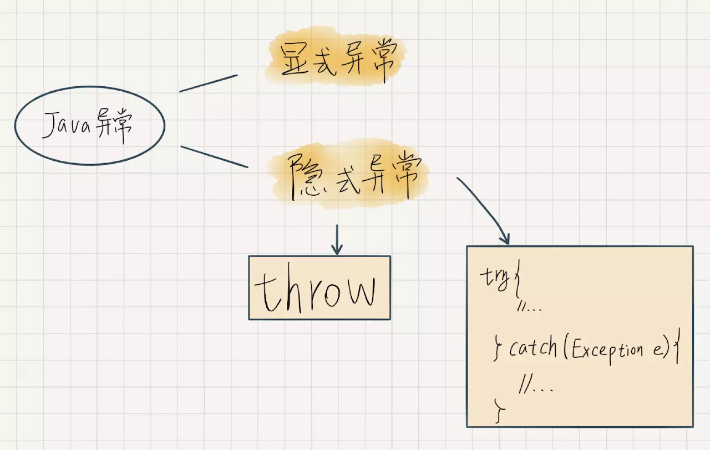
对于隐式异常，在触发时，需要显示捕获（try-catch），或者在方法头上，用 "throw" 关键字声明，交由调用者捕获处理。
2.2 使用异常捕获
在我们编写异常处理代码的时候，主要就是使用前面介绍到的 try-catch-finally 这三种代码块。
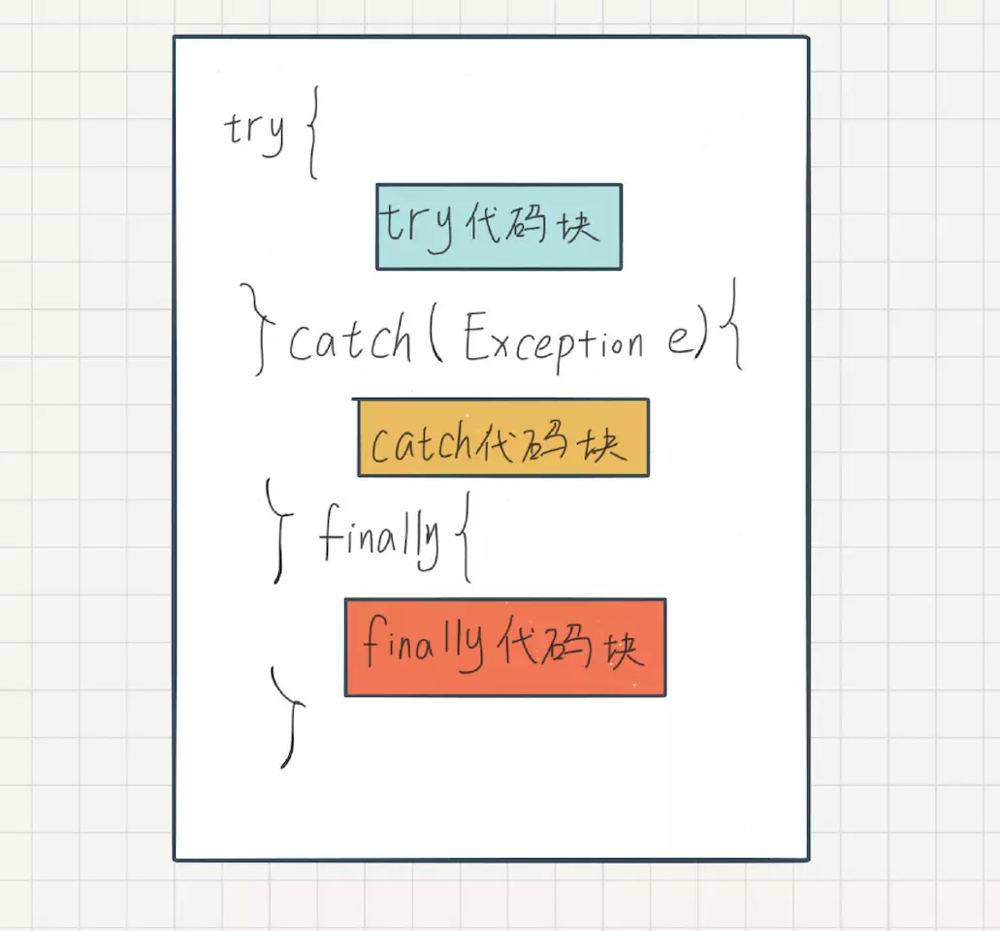
try 代码块：包含待监控异常的代码。
catch 代码块：紧跟 try 块之后，可以指定异常类型。允许指定捕获多种不同的异常，catch 块用来捕获在 try 块中出发的某个指定类型的异常。
finally 代码块：紧跟 try 块或 catch 块之后，用来声明一段必定会运行的代码。例如用来清理一些资源。
catch 允许存在多个，用于针对不同的异常做不同的处理。如果使用 catch 捕获多种异常，各个 catch 块是互斥的，和 switch 语句类似，优先级是从上到下，只能选择其一去处理异常。
既然 try-catch-finally 存在多种情况，并且在发生异常和不发生异常时，表现是不一致的，我们就分清楚来单独分析。
1. try块中，未发生异常
不触发异常，当然是我们乐于看见的。在这种情况下，如果有 finally 块，它会在 try 块之后运行，catch 块永远也不会被运行。
2. try块中，发生异常
在发生异常时，会首先检查异常类型，是否存在于我们的 catch 块中指定的待捕获异常。如果存在，则这个异常被捕获，对应的 catch 块代码则开始运行，finally 块代码紧随其后。
例如：我们只监听了空指针（NullPointerException），此时如果发生了除数为 0 的崩溃（ArithmeticException），则是不会被处理的。
当触发了我们未捕获的异常时，finally 代码依然会被执行，在执行完毕后，继续将异常“抛出去”。
3. catch 或者 finally 发生异常
catch 代码块和 finally 代码块，也是我们编写的，理论上也是有出错的可能。
那么这两段代码发生异常，会出现什么情况呢？
当在 catch 代码块中发生异常时，此时的表现取决于 finally 代码块中是否存在 return 语句。如果存在，则 finally 代码块的代码执行完毕直接返回，否则会在 finally 代码块执行完毕后，将 catch 代码中新产生的异常，向外抛出去。 而在极端情况下，finally 代码块发生了异常，则此时会中断 finally 代码块的执行，直接将异常向外抛出。
2.3 异常捕获的返回值
再回头看看第一个问题，假如我们写了一个方法，其中的代码被 try-catch-finally 包裹住进行异常处理，此时如果我们在多个地方都有 return 语句，最终谁的会被执行？
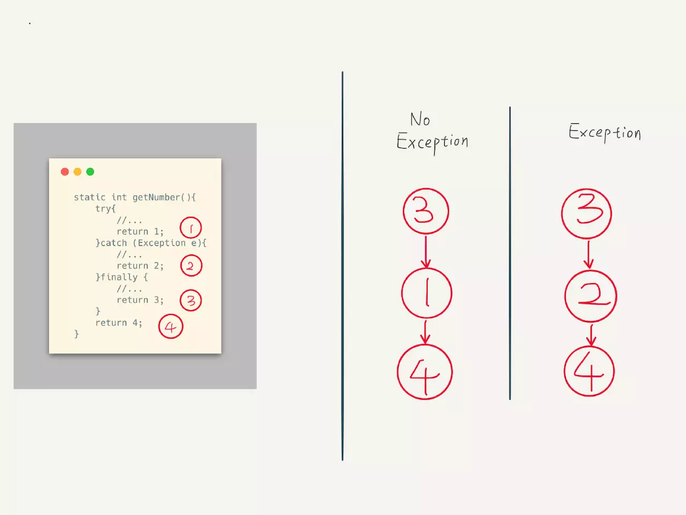
如上图所示，在完整的 try-catch-finally 语句中，finally 都是最后执行的，假设 finally 代码块中存在 return 语句，则直接返回，它是优先级最高的。 一般我们不建议在 finally 代码块中添加 return 语句，因为这会破坏并阻止异常的抛出，导致不宜排查的崩溃。
2.4 异常的类型
在 Java 中，所有的异常，其实都是一个个异常类，它们都是 Throwable 类或其子类的实例。
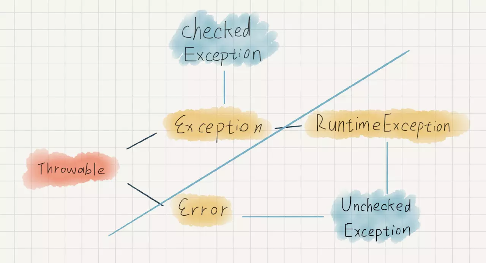
Throwable 有两大子类，Exception 和 Error。
Exception：表示程序可能需要捕获并且处理的异常。
Error：表示当触发 Error 时，它的执行状态已经无法恢复了，需要中止线程甚至是中止虚拟机。这是不应该被我们应用程序所捕获的异常。
通常，我们只需要捕获 Exception 就可以了。但 Exception 中，有一个特殊的子类 RuntimeException，即运行时错误，它是在程序运行时，动态出现的一些异常。比较常见的就是 NullPointerException、ArrayIndexOutOfBoundsException 等。 Error 和 RuntimeException 都属于非检查异常（Unchecked Exception），与之相对的就是普通 Exception 这种属于检查异常（Checked Exception）。
所有检查异常都需要在程序中，用代码显式捕获，或者在方法中用 throw 关键字显式标注。其实意思很明显，要不你自己处理了，要不你抛出去让别人处理。
这种检查异常的机制，是在编译期间进行检查的，所以如果不按此规范处理，在编译器编译代码时，就会抛出异常。
2.5 异常处理的性能问题
对于异常处理的性能问题，其实是一个很有争议的问题，有人觉得异常处理是多做了一些工作，肯定对性能是有影响的。但是也有人觉得异常处理的影响，和增加一个 if-else 属于同种量级，对性能的影响其实微乎其微，是在可以接受的范围内的。 既然有争议，最简单的办法是写个 Demo 验证一下。当然，我们这里是需要区分不同的情况，然后根据解决对比的。
一个最简单的 for 循环 100w 次，在其中做一个 a++ 的自增操作。
A：无任何 try-catch 语句。
B：将 a++ 包在 try 代码块中。
C：在 try 代码块中，触发一个异常。
就是一个简单的 for 循环，就不贴代码了，异常通过 5/0 这样的运算，触发除数为 0 的 ArithmeticException 异常，并在 JDK 1.8 的环境下运行。
为了避免影响采样结果，每个例子都单独运行 10 遍之后，取平均值（单位纳秒）。
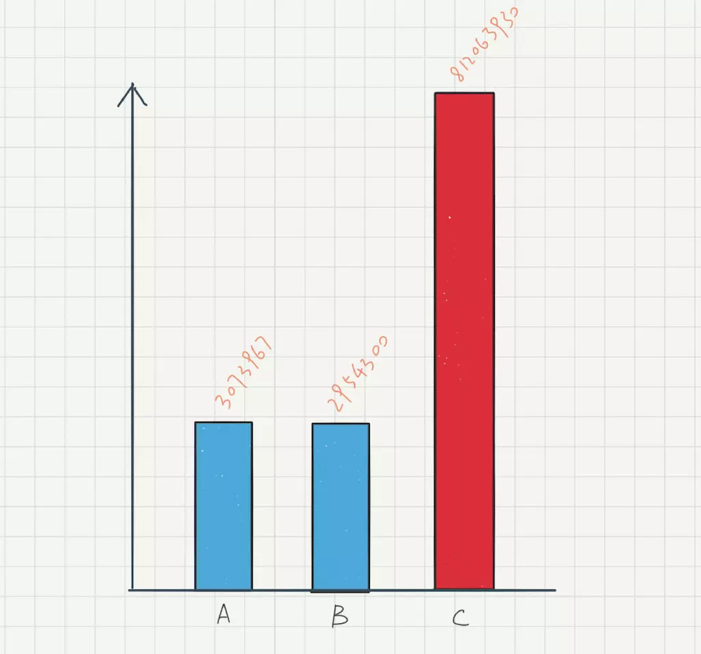
到这里基本上就可以得出结论了，在没有发生异常的情况下，try-catch 对性能的影响微乎其微。但是一旦发生异常，性能上则是灾难性的。
因此，我们应该尽可能的避免通过异常来处理正常的逻辑检查，这样可以确保不会因为发生异常而导致性能问题。
至于为什么发生异常时，性能差别会有如此之大，就需要从 Java 虚拟机 JVM 的角度来分析了，后面会详细分析。
2.6 异常处理无法覆盖异步回调
try-catch-finally 确实很好用，但是它并不能捕获，异步回调中的异常。try 语句里的方法，如果允许在另外一个线程中，其中抛出的异常，是无法在调用者这个线程中捕获的。
这一点在使用的过程中，需要特别注意。
三、JVM 如何处理异常
3.1 JVM 异常处理概述
接下来我们从 JVM 的角度，分析 JVM 如何处理异常。
当异常发生时，异常实例的构建，是非常消耗性能的。这是由于在构造异常实例时，Java 虚拟机需要生成该异常的异常栈（stack trace）。 异常栈会逐一访问当前线程的 Java 栈帧，以及各种调试信息。包括栈帧所指向的方法名，方法所在的类名、文件名以及在代码中是第几行触发的异常。 这些异常输出到 Log 中，就是我们熟悉的崩溃日志（崩溃栈）。 3.2 崩溃实例分析异常处理
当把 Java 代码编译成字节码后，每个方法都会附带一个异常表，其中记录了当前方法的异常处理。
下面直接举个例子，写一个最简单的 try-catch 类。
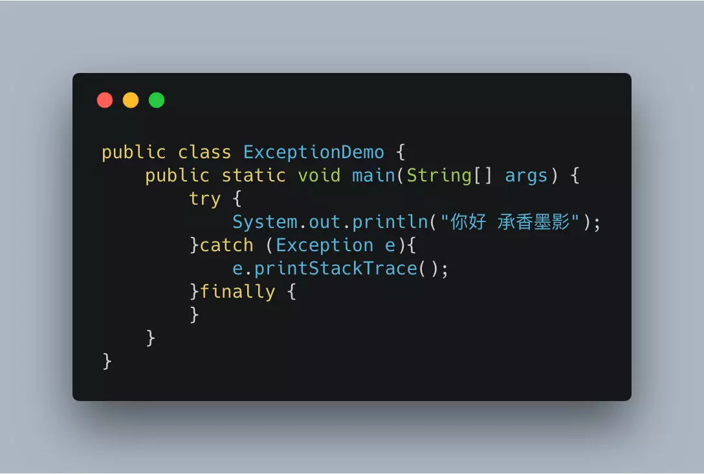
使用 javap -c 进行反编译成字节码。
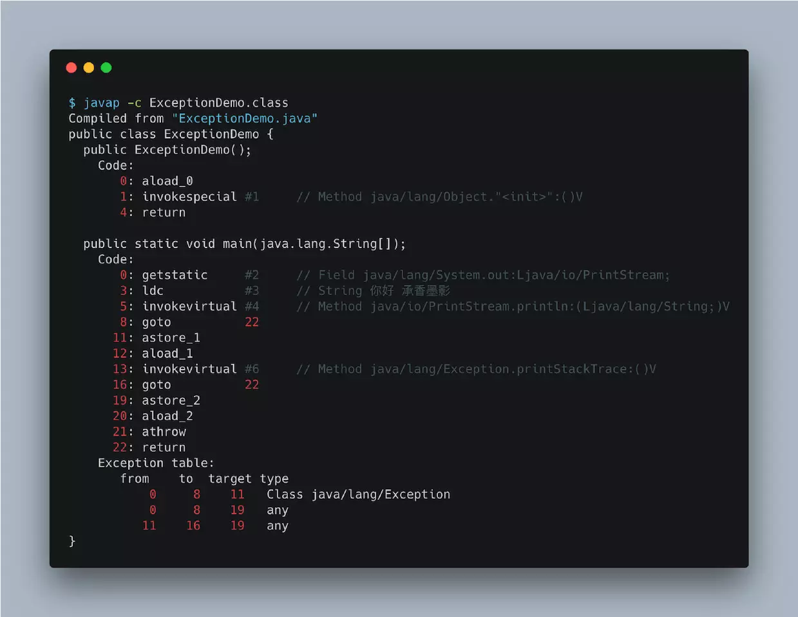
可以看到，末尾的 Exceptions Table 就是异常表。异常表中的每一条记录，都代表了一个异常处理器。
异常处理器中，标记了当前异常监控的起始、结束代码索引，和异常处理器的索引。其中 from 指针和 to 指针标识了该异常处理器所监控的代码范围，target 指针则指向异常处理器的起始位置，type 则为最后监听的异常。
例如上面的例子中，main 函数中存在异常表，Exception 的异常监听代码范围分别是 [0,8)（不包括 8），异常处理器的索引为 11。
继续分析异常处理流程，还需要区分是否命中异常。
1. 命中异常
当程序发生异常时，Java 虚拟机会从上到下遍历异常表中所有的记录。当发现触发异常的字节码的索引值，在某个异常表中某个异常监控的范围内。Java 虚拟机会判断所抛出的异常和该条异常监听的异常类型，是否匹配。如果能匹配上，Java 虚拟机会将控制流转向至该此异常处理器的 target 索引指向的字节码，这是命中异常的情况。
2. 未命中异常
而如果遍历完异常表中所有的异常处理器之后，仍未匹配到异常处理器，那么它会弹出当前方法对应的 Java 栈帧。回到它的调用者，在其中重复此过程。 最坏的情况下，Java 虚拟机需要遍历当前线程 Java 栈上所有方法的异常表。
3.3 编译后的 finally 代码块
我们写的代码，其实终归是给人读的，但是编译器干的事儿，都不是人事儿。它会把代码做一些特殊的处理，只是为了让自己更好解析和执行。
编译器对 finally 代码块，就是这样处理的。在当前版本的 Java 编译器中，会将 finally 代码块的内容，复制几份，分别放在所有可能执行的代码路径的出口中。
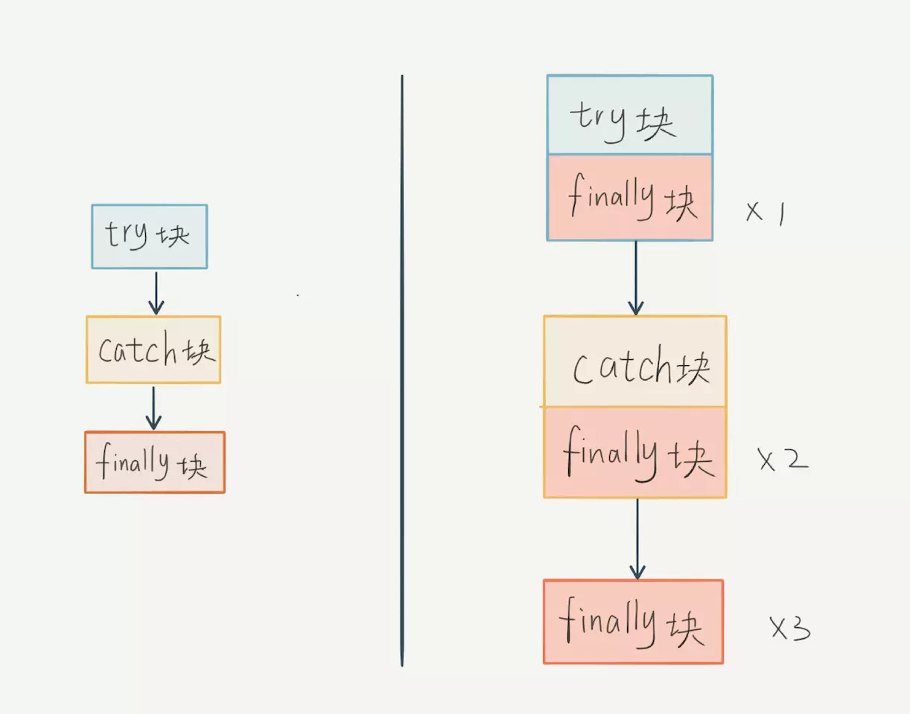
写个 Demo 验证一下，代码如下。
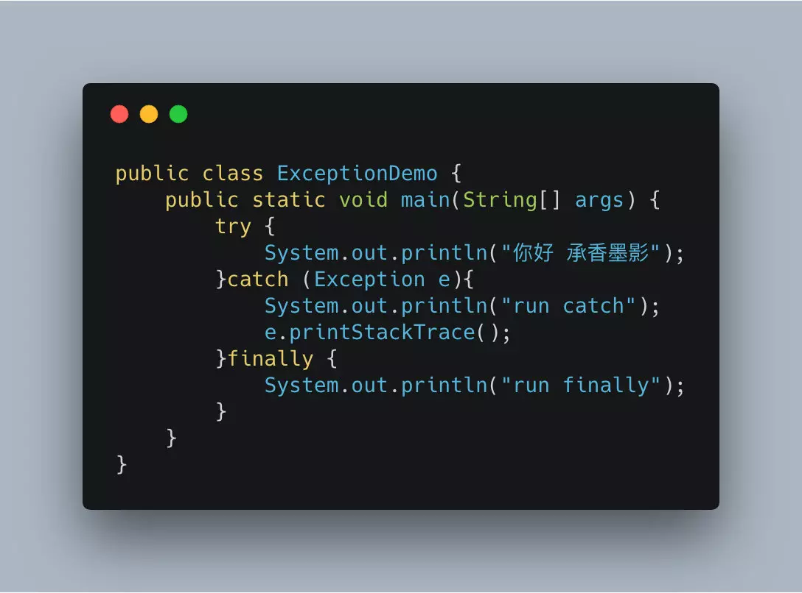
继续 javap -c 反编译成字节码。
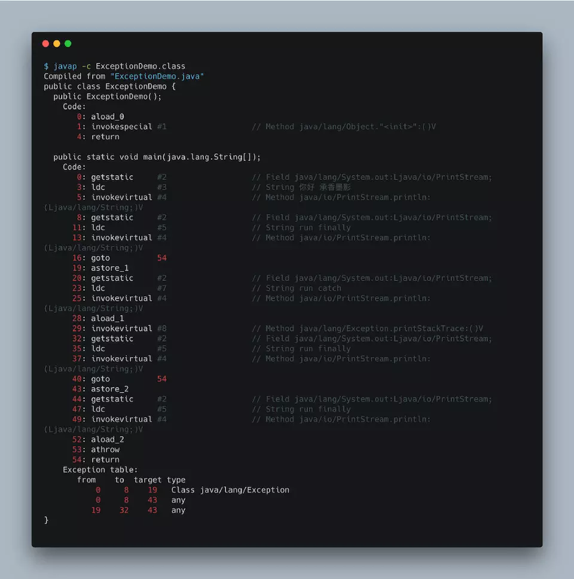
这个例子中，为了更清晰的看到 finally 代码块，我在其中输出的一段 Log “run finally”。可以看到，编译结果中，包含了三份 finally 代码块。
其中，前两份分别位于 try 代码块和 catch 代码块的正常执行路径出口。最后一份则作为全局的异常处理器，监控 try 代码块以及 catch 代码块。它将捕获 try 代码块触发并且未命中 catch 代码块捕获的异常，以及在 catch 代码块触发的异常。 而 finally 的代码，如果出现异常，就不是当前方法所能处理的了，会直接向外抛出。
3.4 异常表中的 any 是什么？
从上图中可以看到，在异常表中，还存在两个 any 的信息。
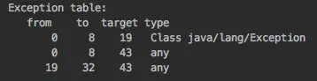
第一个信息的 from 和 to 的范围就是 try 代码块，等于是对 catch 遗漏异常的一种补充，表示会处理所有种类的异常。
第二个信息的 from 和 to 的范围，仔细看能看到它其实是 catch 代码块，这也正好印证了我们上面的结论，catch 代码块其实也被异常处理器监控着。
只是如果命中了 any 之后，因为没有对应的异常处理器，会继续向上抛出去，交由该方法的调用方法处理。
四、总结
到这里我们就基本上讲清楚了 Java 异常处理的所有内容。
在日常开发当中，应该尽量避免使用异常处理的机制来处理业务逻辑，例如很多代码中，类型转换就使用 try-catch 来处理，其实是很不可取的。
异常捕获对应用程序的性能确实有影响，但也是分情况的。
一旦异常被抛出来，方法也就跟着 return 了，捕获异常栈时会导致性能变得很慢，尤其是调用栈比较深的时候。
但是从另一个角度来说，异常抛出时，基本上表明程序的错误。应用程序在大多数情况下，应该是在没有异常情况的环境下运行的。所以，异常情况应该是少数情况，只要我们不滥用异常处理，基本上不会影响正常处理的性能问题。
原文链接:
https://juejin.im/post/5c35fde96fb9a04a102f79cc
若存在侵权，请联系
我
Copyright © 2015 - 2019 Gaofeicm Inc.All Rights Reserved.
赣ICP备17008005号
Gaofeicm